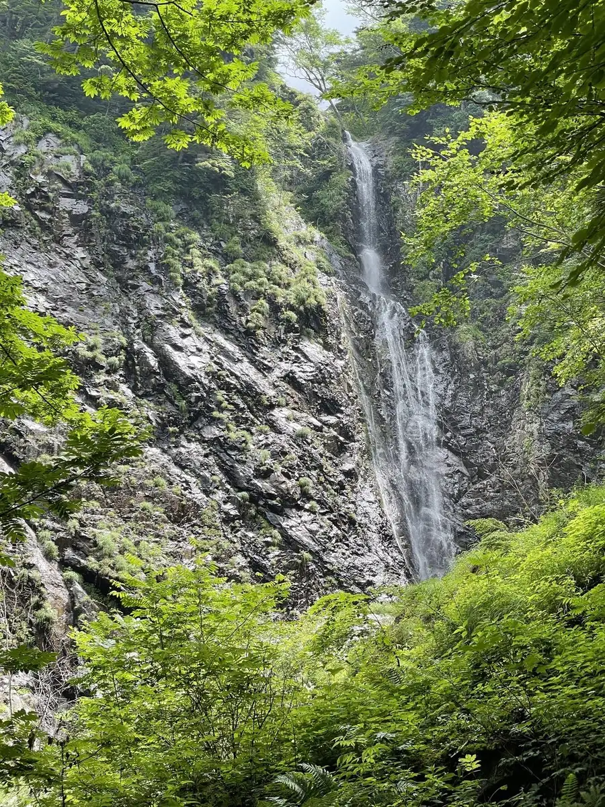
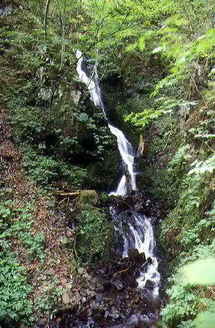
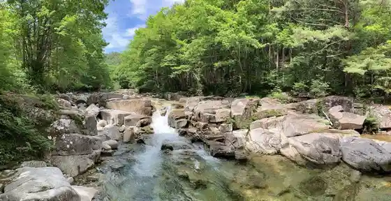
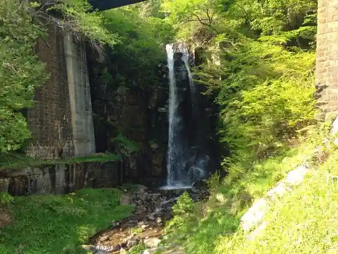
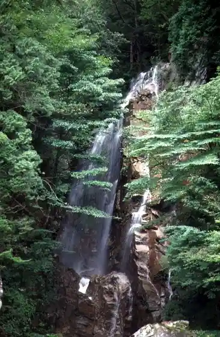

Agematsu
Agematsu · Nagano
Agematsu
Highlighted on the Nagano map.

Sights
Ki Miyo Falls
Keishin Falls

Akazawa Gorge

Ono Falls
Ono Falls, one of the Kiso Eight Views on Route 19 (about 15 m), painted by Hiroshige; freezes into ice pillars in midwinter.

Kakure Taki

Akazawa no Seiryu
Akasawa clear stream canyon lined mainly with Kiso hinoki forest, with seasonal gorge scenery.
Akazawa Shizen Kyuyo Hayashi no Oyamarenge
Akazawa Shizen Kyuyo Hayashi no Akayashio
Gyokurin In Tenjin Yama no Shidare Sakura
Nezame no Toko
Nezame-no-Toko, a nationally designated scenic gorge on the Kiso River (Kiso Eight Views), with pale rock and emerald water and an Urashima Taro legend.